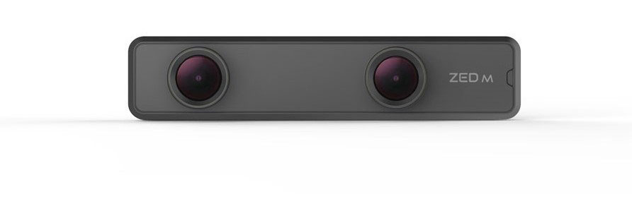

Kamera Stereo untuk Deteksi Objek
Kamera stereo terdiri dari dua buah kamera yang disusun sejajar menyerupai mata manusia. Rajendar, dkk. menggunakan kamera stereo sebagai dasar untuk mendeteksi pejalan kaki pada autonomous vehicle (AV) [1]. Metode yang dikembangkan bekerja dengan handal walaupun pada lingkungan kurang cahaya. Selain itu, metode tersebut juga dapat mendeteksi pejalan kaki dalam berbagai skenario, seperti oklusi pejalan kaki, pakaian yang berbeda dan orientasi pejalan kaki yang beragam. Menurut Peneliti, sistem deteksi objek menggunakan kamera monokuler tidak efektif untuk memperkirakan posisi objek dan mendeteksi objek dalam kondisi kurang cahaya. Maka dari itu, Ranjendar, dkk. mengusulkan sistem deteksi objek menggunakan kamera stereo. Kamera stereo secara efektif memperoleh citra objek dari dua sudut pandang dan disparitas secara bersamaan. Setelah pengambilan citra, tahap selanjutnya adalah pra-pemrosesan. Pra-pemrosesan meliputi penghapusan data pengukuran yang tidak dibutuhkan, penghapusan latar belakang, meningkatkan kualitas gambar dengan menyesuaikan kecerahan, gamma, kontras, ketajaman atau kehalusan dan penskalaan Region of Interest (RoI). Tahapan tersebut dilakukan untuk meningkatkan akurasi deteksi. Biasanya, tahap pra-pemrosesan menerapkan berbagai filter, seperti filter Kalman. Eksperimen dilakukan menggunakan MatLab dan set data dari Enpeda, KITTI dan Daimler. Dua kamera disusun sejajar dengan jarak 10 cm untuk mendapatkan citra pada bagian depan kendaraan. Citra dari dua kamera tersebut diproses untuk mendapatkan nilai disparitas. Berdasarkan nilai disparitas, didapatkan jarak antara kendaraan dan objek terdeteksi. Ketikas objek terdeteksi berada di jarak kurang 3,3 m, sistem pengereman darurat akan bekerja. Kecepatan kendaraan saat eksperimen tidak lebih dari 30 km/jam. Hasil eksperimen menunjukan bawah metode yang diusulkan cukup handal untuk mendeteksi pejalan kaki walaupun dalam keadaan kurang cahaya.
Berbeda dengan Rajendar, dkk., J. L. Boldt, dkk. menggunakan kamera stereo untuk mengamati dan mengukur ikan di area yang tidak dapat diambil sampelnya dengan metode tradisional [2]. Boldt, dkk. mengembangkan sistem yang dapat mengindentifikasi spesies, panjang, jarak relatif antara ikan dan kamera, kemiringan serta yaw ikan terhadap kamera. Sistem dapat digunakan untuk mengevaluasi ikan pada situasi ketika metode tradisional tidak dapat dilakukan, seperti disebabkan oleh lalu lintas kapal, cuaca berkabut dan daerah laut dilindungi. Dalam eksperimen, dua kamera disusun sejajar dengan jarak 14 cm. Sistem mengambil gambar dengan frekuensi 4 hingga 8 gambar per detik. Pengukuran dilakukan menggunakan paket perangkat lunak analisis stereo SEBASTES yang ditulis dalam bahasa komputasi Python. Dari uji coba, dapat disimpulkan bahwa teknologi kamera stereo adalah alat yang berguna untuk mempelajari ikan di dalam air. Chen Shi, dkk. menawarkan sistem visi stereo dengan prosedur yang dapat memperoleh panjang tubuh ikan oplegnathus punctatus berdasarkan LabVIEW sebagai salah satu metode non-kontak bawah air yang berguna dalam budidaya ikan, seperti penyortiran dan grading [3]. Dari ujung moncong ikan hingga pangkal ekor dapat diekstraksi secara otomatis melalui algoritma pemrosesan yang didasarkan pada perhitungan kontur dan lambung cembung (convex hull). Percobaan dilakukan untuk memvalidasi tingkat keberhasilan dan akurasi estimasi panjang ikan pada berbagai sudut tubuh ikan yang berenang bebas terhadap sumbu optik. Hasil percobaan menunjukkan bahwa sistem yang diusulkan dapat memperkirakan panjang ikan dengan akurasi dan tingkat keberhasilan yang tinggi. Analisis regresi antara panjang badan yang diperkirakan dan diukur secara manual menunjukkan hubungan linier yang baik dengan R^2 > 0,91 dan kesalahan relatif rata-rata < 2,55%. Menurut peneliti, hasil tersebut menunjukkan bahwa sistem yang diusulkan untuk pengukuran panjang tubuh ikan non-kontak dan otomatis dapat diterapkan di tambak ikan [3].
Chen Shi, dkk. menawarkan sistem visi stereo dengan prosedur yang dapat memperoleh panjang tubuh ikan oplegnathus punctatus berdasarkan LabVIEW sebagai salah satu metode non-kontak bawah air yang berguna dalam budidaya ikan, seperti penyortiran dan grading [3]. Dari ujung moncong ikan hingga pangkal ekor dapat diekstraksi secara otomatis melalui algoritma pemrosesan yang didasarkan pada perhitungan kontur dan lambung cembung (convex hull). Percobaan dilakukan untuk memvalidasi tingkat keberhasilan dan akurasi estimasi panjang ikan pada berbagai sudut tubuh ikan yang berenang bebas terhadap sumbu optik. Hasil percobaan menunjukkan bahwa sistem yang diusulkan dapat memperkirakan panjang ikan dengan akurasi dan tingkat keberhasilan yang tinggi. Analisis regresi antara panjang badan yang diperkirakan dan diukur secara manual menunjukkan hubungan linier yang baik dengan R^2 > 0,91 dan kesalahan relatif rata-rata < 2,55%. Menurut peneliti, hasil tersebut menunjukkan bahwa sistem yang diusulkan untuk pengukuran panjang tubuh ikan non-kontak dan otomatis dapat diterapkan di tambak ikan [3].
W.-S. Kim, dkk. mengembangkan sistem pengukuran tinggi tanaman berbasis visi mesin untuk robot budidaya otonom [4]. Sistem dikembangkan dengan konfigurasi kamera stereo sederhana untuk mengukur tinggi berbagai tanaman di lapangan. Gambar stereo yang diperoleh dikonversi ke peta disparitas melalui pencocokan stereo. Kemudian, disparitas setiap piksel dihitung untuk menentukan jarak antara kamera dan tanaman. Peta kedalaman (depth maps) digunakan untuk menentukan tepi wilayah yang diinginkan (regions of interest atau ROI). Tinggi tanaman dihitung berdasarkan titik terendah dan titik tertinggi pada ROI. Pendekatan tersebut diuji pada lima tanaman. Hasil eksperimen menunjukan bahwa sistem dapat mendeteksi wilayah tanaman target bahkan ketika objek tumpang tindih. Tinggi tanaman yang diperkirakan oleh sistem menunjukan kesesuaian dengan tinggi tanaman sebenarnya dengan R2 berkisar antara 0,78 hingga 0,84.
Abdelmoghit Zaarane, dkk. menyusun makalah yang berfokus pada pengukuran jarak antar kendaraan [5]. Pengukuran jarak antar kendaraan sering digunakan dalam beberapa sistem pintar, seperti Driving Safety Support Systems (DSSS), Autonomous Driving dan Traffic Mobility. Dalam makalah tersebut, Peneliti mengusulkan sistem pengukuran jarak antar-kendaraan untuk Autonomous Driving berdasarkan pemrosesan gambar dan visi stereo. Sistem yang diusulkan menggunakan dua kamera mono yang disusun menjadi satu kamera stereo di kendaraan hosting di belakang kaca spion. Pertama, deteksi kendaraan dilakukan pada satu kamera menggunakan metode dari karya lain yang dipilih oleh Peneliti. Kemudian, kendaraan yang sama dideteksi oleh kamera kedua menggunakan teknik template matching. Dengan demikian, jarak antar-kendaraan dihitung menggunakan metode sederhana berdasarkan posisi kendaraan di kedua kamera, derivasi geometris dan data teknis tambahan seperti jarak antara kamera dan sudut bidang pandang kamera. Hasil eksperimen menunjukkan akurasi tinggi dari metode yang diusulkan dibandingkan dengan karya – karya sebelumnya dari literatur yang dikaji oleh peneliti dan memungkinkan untuk mengukur secara efisien jarak antara kendaraan objek dan kendaraan hosting. Selain itu, metode tersebut dapat digunakan pada beberapa sistem dari berbagai domain secara real time terlepas dari jenis objeknya. Literatur yang digunakan sebagai pembanding adalah karya Hsu, dkk. [6], Salman, dkk. [7] dan Mrovlje, dkk. [8].
De Jongh, dkk. ingin mendapatkan pose relatif antara target yang tidak kooperatif dan satelit pemburu [9]. Kurangnya pengetahuan mengenai gerakan, distribusi massa dan bentuk target membatasi kemungkinan untuk secara akurat melacak target. Peneliti menggunakan sepasang kamera stereo yang dipasang pada satelit pemburu untuk mengekstrak fitur unik pada permukaan target yang tidak diketahui dan tidak kooperatif menggunakan transformasi fitur invarian skala (scale invariant feature transform atau SIFT). Fitur-fitur tersebut digunakan sebagai input pengukuran Extended Kalman Filter (EKF) yang menggunakan pendekatan lokalisasi dan pemetaan simultan (simultaneous localisation and mapping atau SLAM). Orientasi dan posisi target relatif terhadap pemburu diperkirakan, bersama dengan kecepatan linier dan sudut target. Gerakan target diperkirakan relatif terhadap bingkai referensi kamera (CRF), sementara sistem secara bersamaan menghitung bentuk dan ukuran target. Lingkungan simulasi dibuat untuk menguji dan memverifikasi algoritma estimasi. Integrasi ekstraktor fitur dengan EKF diuji menggunakan data kamera nyata. Sebuah percobaan laboratorium dilakukan untuk menangkap urutan gambar dari target bergerak. Hasil menunjukkan bahwa kamera stereo dan pendekatan EKF-SLAM adalah metode yang layak untuk sistem mitigasi puing-puing ruang angkasa yang sepenuhnya otonom.
Chia-Feng, dkk. mengusulkan metode baru untuk mendeteksi objek yang mengandung banyak warna dengan distribusi non-homogen pada latar belakang yang kompleks dan memperkirakan kedalaman serta bentuk objek tersebut menggunakan kamera stereo [10]. Untuk mengekstrak fitur deteksi objek, Peneliti mengusulkan fuzzy color histograms (FCH) berdasarkan self-splitting clustering (SSC) dari ruang warna hue-saturation (HS). Untuk setiap jendela pemindaian dalam piramida gambar berskala, FCH diperoleh dengan mengumpulkan derajat fuzzy dari semua piksel yang dimiliki setiap cluster. FCH diumpankan ke pengklasifikasi fuzzy untuk mendeteksi objek pada gambar kiri yang ditangkap oleh kamera stereo. Untuk menemukan daerah objek yang cocok pada gambar kanan, gambar kiri dan kanan terlebih dahulu disegmentasi menggunakan ruang HS yang dipartisi SSC. Kedalaman objek kemudian ditemukan dengan melakukan pencocokan stereo pada gambar tersegmentasi. Untuk menemukan bentuk objek, peta disparitas dibangun menggunakan perkiraan kedalaman objek, dan secara otomatis menentukan ukuran jendela pencocokan stereo dan rentang pencarian disparitas. Hasilnya, bentuk objek tersegmentasi dari peta disparitas. Hasil eksperimen menunjukkan bahwa metode yang diusulkan dapat diterapkan untuk mendeteksi objek yang mengandung banyak warna dalam latar belakang yang kompleks. Dalam metode tersebut ruang HS yang dipartisi digunakan tidak hanya untuk mengekstrak fitur histogram FCH tetapi juga untuk mengelompokan gambar untuk estimasi kedalaman dan bentuk. Selain itu, metode deteksi dan estimasi yang diusulkan mengungguli metode dari literatur lain ([11-14]).
[1] S. Rajendar, D. Rathinasamy, R. Pavithra, V. K. Kaliappan, and S. Gnanamurthy, “Prediction of stopping distance for autonomous emergency braking using stereo camera pedestrian detection,” Mater. Today Proc., p. S2214785321050707, Jul. 2021, doi: 10.1016/j.matpr.2021.07.211.
[2] J. L. Boldt, K. Williams, C. N. Rooper, R. H. Towler, and S. Gauthier, “Development of stereo camera methodologies to improve pelagic fish biomass estimates and inform ecosystem management in marine waters,” Fish. Res., vol. 198, pp. 66–77, Feb. 2018, doi: 10.1016/j.fishres.2017.10.013.
[3] C. Shi, Q. Wang, X. He, X. Zhang, and D. Li, “An automatic method of fish length estimation using underwater stereo system based on LabVIEW,” Comput. Electron. Agric., vol. 173, p. 105419, Jun. 2020, doi: 10.1016/j.compag.2020.105419.
[4] W.-S. Kim, D.-H. Lee, Y.-J. Kim, T. Kim, W.-S. Lee, and C.-H. Choi, “Stereo-vision-based crop height estimation for agricultural robots,” Comput. Electron. Agric., vol. 181, p. 105937, Feb. 2021, doi: 10.1016/j.compag.2020.105937.
[5] A. Zaarane, I. Slimani, W. Al Okaishi, I. Atouf, and A. Hamdoun, “Distance measurement system for autonomous vehicles using stereo camera,” Array, vol. 5, p. 100016, Mar. 2020, doi: 10.1016/j.array.2020.100016.
[6] T.-. Hsu and T.-. Wang, “An improvement stereo vision images processing for object distance measurement,” Int. J. Autom. Smart Technol., vol. 5, no. 2, pp. 85–90, 2015.
[7] Y. D. Salman, K. R. Ku-Mahamud, and E. Kamioka, “DISTANCE MEASUREMENT FOR SELF-DRIVING CARS USING STEREO CAMERA,” no. 105, p. 8, 2017.
[8] J. Mrovlje and D. Vrancic, “Distance measuring based on stereoscopic pictures,” 9th Int. PhD Workshop Syst. Control Young Gener. Viewp., pp. 1–6, 2008.
[9] W. C. De Jongh, H. W. Jordaan, and C. E. Van Daalen, “Experiment for pose estimation of uncooperative space debris using stereo vision,” Acta Astronaut., vol. 168, pp. 164–173, Mar. 2020, doi: 10.1016/j.actaastro.2019.12.006.
[10] C.-F. Juang, G.-C. Chen, C.-W. Liang, and D. Lee, “Stereo-camera-based object detection using fuzzy color histograms and a fuzzy classifier with depth and shape estimations,” Appl. Soft Comput., vol. 46, pp. 753–766, Sep. 2016, doi: 10.1016/j.asoc.2015.10.025.
[11] R. Lienhart and J. Maydt, “An extended set of haar-like features for rapid object detection,” Ext. Set Haar- Featur. Rapid Object Detect., pp. 900–903, 2002.
[12] G.-. Chen and C.-. Juang, “Object detection using color entropies and a fuzzy classifier,” IEEE Comput. Intell. Mag., vol. 8, no. 1, pp. 33–45, 2013.
[13] T. Kawanishi, H. Murase, S. Takagi, and M. Werner, “Dynamic active search for quick object detection with pan-tilt-zoom camera,” in IEEE International Conference on Image Processing, 2001, vol. 3, pp. 716–719. [Online]. Available: www.scopus.com
[14] C.-. Juang and G.-. Chen, “A TS fuzzy system learned through a support vector machine in principal component space for real-time object detection,” IEEE Trans. Ind. Electron., vol. 59, no. 8, pp. 3309–3320, 2012.